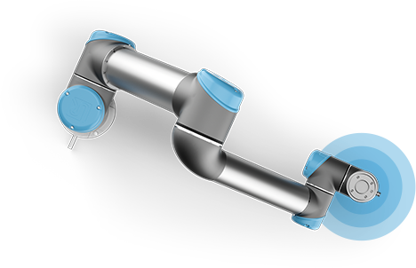
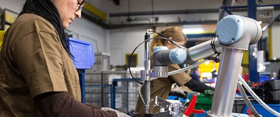

Hos Universal Robots er målet at levere 6-aksede industrielle
robotarme, der er sikre, fleksible og brugervenlige,
til virksomheder
i alle størrelser over hele verden. I dag er det blevet både billigere og
nemmere at anvende robotter i samspil med mennesker. Ved at lave
en arbejdsfordelingmellem tunge, ensformige opgaver og de mere
fingersnilde, som kræver faglighed og opfindsomhed,
kan virksomheder
spare dyrebar tid og ressourcer samtidig med at øge produktiviteten.
Vi udvikler industrielle robotter, der automatiserer og strømliner
gentagne industrielle processer.
På den måde kan produktions
afdelingerne give deres ansatte sjovere opgaver, der kræver et højere
færdigheds niveau.
Det skaber jobs, der giver produktionsmedarbejderne
nye, afvekslende udfordringer og som frigør kapacitet,
der i stedet kan
anvendes til at udarbejde optimeringer af processer og metoder,
der tilfører værdi til virksomheden.
Automatiserer gentagne monotone processer
Fleksibel omstilling til forskellige produktions opgaver
Samarbejdende og sikre at anvende ved farligt arbejde
Brugervenlig robotteknologi, der kan styres af alle medarbejdere
Omkostnings effektiv med én af branchens hurtigste tilbagebetalingstider